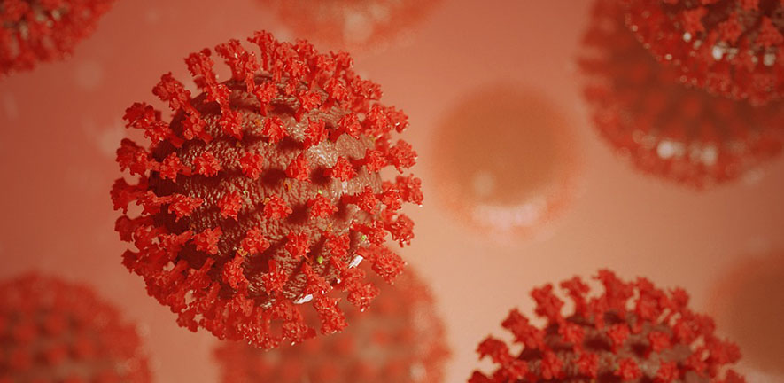

It had been recently reported that alot of covid cases are being reported again. In more populated countries like China, India, etc., the number of reports of covid have been increasing and loads of concreans about another pandemic have been raised Looking at the numbers of covid reports increasing, countries have taken a stand to prevent another global pandemic. They have started to take measures such as making mask compulsary, having sanitizer stations near every mall or big stores, and more. Concearns arise around the globe and people fear the thought of another pandemic and want to prevent it at any cost.
It is also suspected that another variant of the coronavirus called "JN.1" is said to be more severe and dangerous. It is said that JN.1 causes way more damage than covid and the chances of surviving it are massively low. Given the curcumstances of this new variant and how rapidly it's spreading, chances of anotherv lockdown rise.
